Measured scenario experiment
Which context produced the strongest experience?
Your judgment is the primary result. Evaluator scores support comparison but cannot select production content.
Evaluator selection: scenario-1-concept-only
All three candidates are rejects with fundamentally broken core interactions, but scenario-1-concept-only demonstrates marginally more substantive experience than the alternatives. Critically, scenario-1 at least renders the actual activity screen with its intended UI elements present (three flower pots, '?' placeholders, step buttons, a 'Check My Array' button, progress dots, and a disabled 'Next' gate) — the scaffolding of the equal-groups → array → challenge progression is visible and structurally laid out, even though the taps never register and later stages throw 'not visible' errors. This is a failure of wiring/interactivity on top of an otherwise-built multi-stage interface. By contrast, scenario-2-profile and scenario-3-profile-and-spelling both dead-end at a splash/intro screen with zero progression at all — clicking 'Start Adventure' or 'Let's Go!' produces a pixel-identical screen every single time across all captures, meaning no part of the actual learning activity (bugs, flowers, arrays, strawberries, skip-counting) is ever rendered or reachable. These are strictly worse failures: they don't even expose the intended mechanic's DOM/UI, let alone attempt it. Scenario-1's evidence trace at least shows an attempt to reach 'Array Challenge' and 'See it as an Array' — implying a designed multi-step arc existed in the build, even if broken - versus scenario-2 and 3 which only ever show a title card and greeting bubble or a level badge with no gameplay layer instantiated whatsoever. Given the instruction to select the most promising substantive experience rather than the prettiest opening screen, scenario-1 is the only one where any part of the actual pedagogical interaction (skip-count pots, per-step '+' controls, array-building stage) is visibly instantiated in the DOM, making it the strongest (least-bad) candidate for diagnostic follow-up despite its severe functionality failure.</reason> </invoke>
All three candidates are rejects with fundamentally broken core interactions, but scenario-1-concept-only demonstrates marginally more substantive experience than the alternatives. Critically, scenario-1 at least renders the actual activity screen with its intended UI elements present (three flower pots, '?' placeholders, step buttons, a 'Check My Array' button, progress dots, and a disabled 'Next' gate) — the scaffolding of the equal-groups → array → challenge progression is visible and structurally laid out, even though the taps never register and later stages throw 'not visible' errors. This is a failure of wiring/interactivity on top of an otherwise-built multi-stage interface. By contrast, scenario-2-profile and scenario-3-profile-and-spelling both dead-end at a splash/intro screen with zero progression at all — clicking 'Start Adventure' or 'Let's Go!' produces a pixel-identical screen every single time across all captures, meaning no part of the actual learning activity (bugs, flowers, arrays, strawberries, skip-counting) is ever rendered or reachable. These are strictly worse failures: they don't even expose the intended mechanic's DOM/UI, let alone attempt it. Scenario-1's evidence trace at least shows an attempt to reach 'Array Challenge' and 'See it as an Array' — implying a designed multi-step arc existed in the build, even if broken - versus scenario-2 and 3 which only ever show a title card and greeting bubble or a level badge with no gameplay layer instantiated whatsoever. Given the instruction to select the most promising substantive experience rather than the prettiest opening screen, scenario-1 is the only one where any part of the actual pedagogical interaction (skip-count pots, per-step '+' controls, array-building stage) is visibly instantiated in the DOM, making it the strongest (least-bad) candidate for diagnostic follow-up despite its severe functionality failure.</reason> </invoke>
Run summary
{
"checkpoint": "f172e1b",
"childId": "reina",
"concept": "multiplication as equal groups and arrays, connected to skip-counting and interpreted in word problems",
"model": "claude-sonnet-5",
"evaluatorModel": "claude-sonnet-5",
"selectedCandidateId": "scenario-1-concept-only",
"selectionReason": "All three candidates are rejects with fundamentally broken core interactions, but scenario-1-concept-only demonstrates marginally more substantive experience than the alternatives. Critically, scenario-1 at least renders the actual activity screen with its intended UI elements present (three flower pots, '?' placeholders, step buttons, a 'Check My Array' button, progress dots, and a disabled 'Next' gate) — the scaffolding of the equal-groups → array → challenge progression is visible and structurally laid out, even though the taps never register and later stages throw 'not visible' errors. This is a failure of wiring/interactivity on top of an otherwise-built multi-stage interface.\n\nBy contrast, scenario-2-profile and scenario-3-profile-and-spelling both dead-end at a splash/intro screen with zero progression at all — clicking 'Start Adventure' or 'Let's Go!' produces a pixel-identical screen every single time across all captures, meaning no part of the actual learning activity (bugs, flowers, arrays, strawberries, skip-counting) is ever rendered or reachable. These are strictly worse failures: they don't even expose the intended mechanic's DOM/UI, let alone attempt it. Scenario-1's evidence trace at least shows an attempt to reach 'Array Challenge' and 'See it as an Array' — implying a designed multi-step arc existed in the build, even if broken - versus scenario-2 and 3 which only ever show a title card and greeting bubble or a level badge with no gameplay layer instantiated whatsoever.\n\nGiven the instruction to select the most promising substantive experience rather than the prettiest opening screen, scenario-1 is the only one where any part of the actual pedagogical interaction (skip-count pots, per-step '+' controls, array-building stage) is visibly instantiated in the DOM, making it the strongest (least-bad) candidate for diagnostic follow-up despite its severe functionality failure.</reason>\n</invoke>\n",
"allGeneratedCandidatesRejected": true,
"refactorMove": "pivot",
"totalInputTokens": 74507,
"totalOutputTokens": 81219,
"estimatedCostUsd": 0,
"costNote": "Calculated from SUNNY_SANDBOX_*_COST_PER_MTOK."
}scenario-0-control
Scenario 0 — current Sunny control
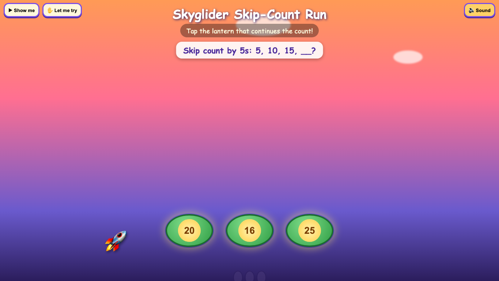
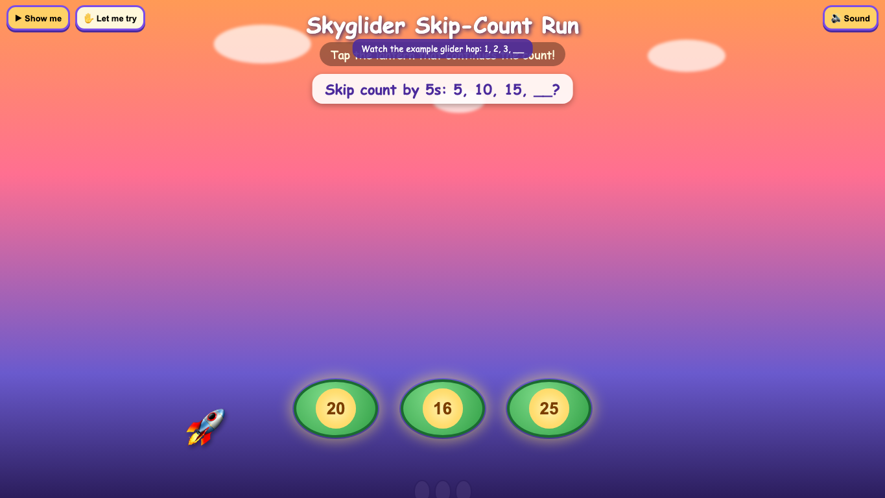
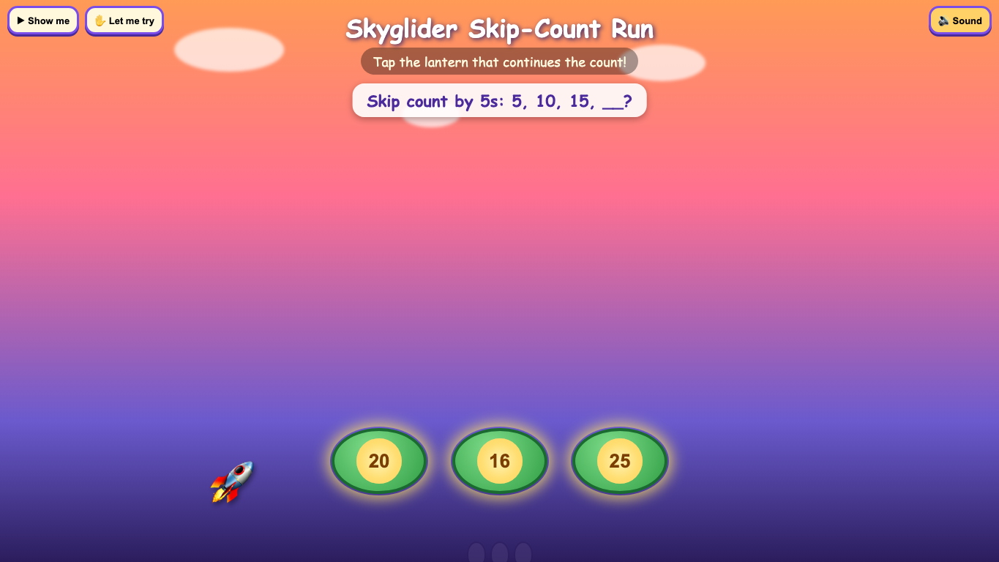
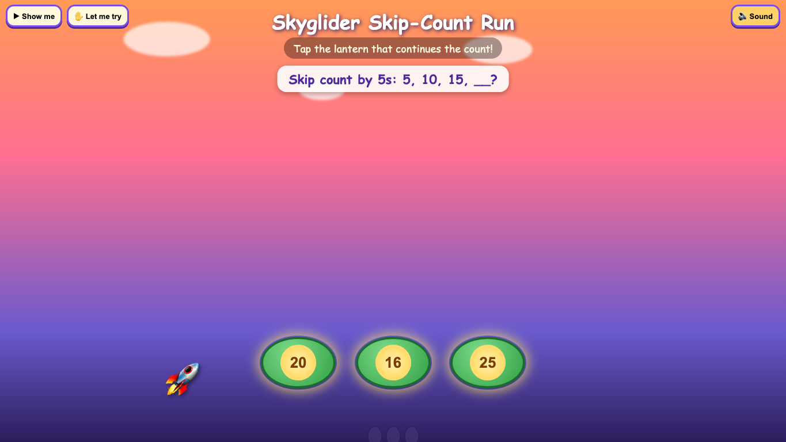
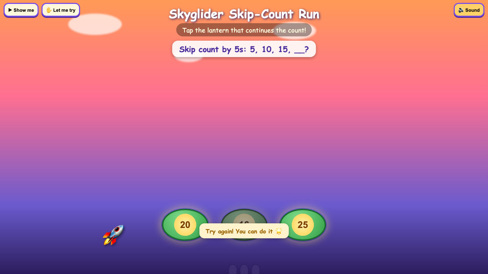
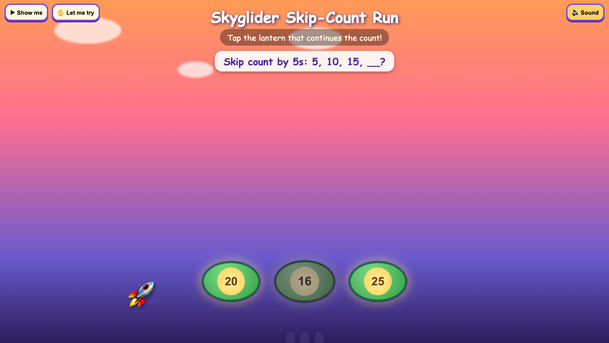
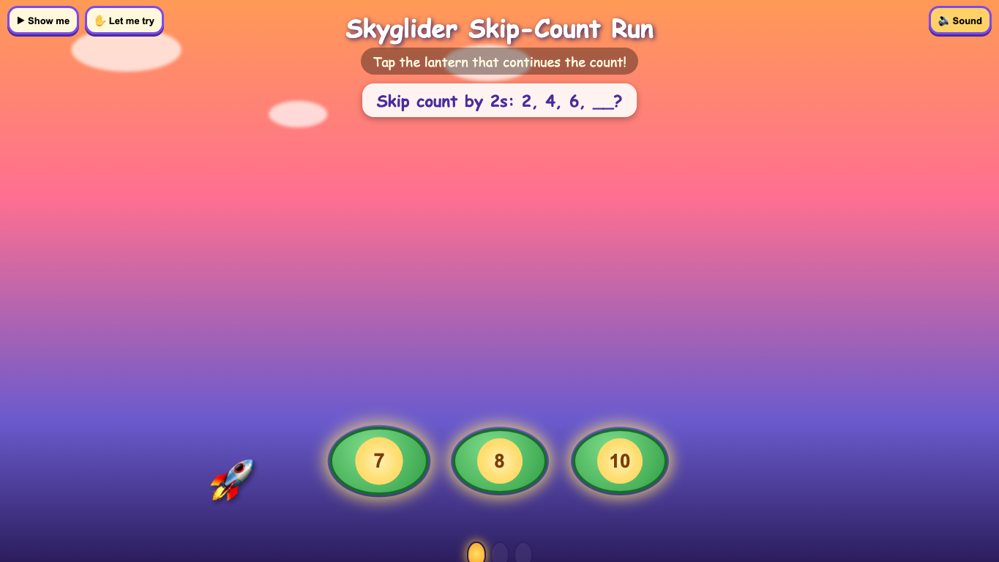
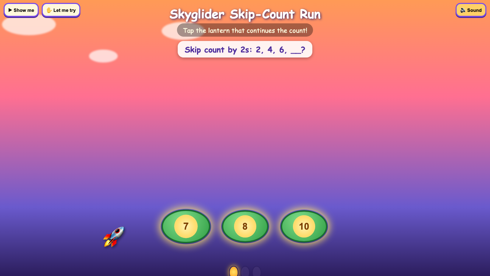
Evaluator judgment
{
"candidateId": "scenario-0-control",
"verdict": "mediocre",
"scores": {
"designQuality": 2,
"originality": 2,
"craft": 2,
"functionality": 2,
"learningIntegration": 2,
"replayAppeal": 2
},
"evidence": [
"Across all screenshots the rocket, clouds, and gradient sky remain static decoration; the only interactive elements are three green oval 'lantern' buttons with plain numbers (20, 16, 25 then later 7, 8, 10) sitting in empty space below the prompt text — this is the same answer-button-in-a-costume pattern called out negatively in Moonlit Cargo/harbor Quest.",
"The trace shows clicking the wrong answer (16) and then the correct answer (20) produced no visible feedback difference in the supplied screenshots — no color change, no animation, no rocket movement, no lantern glow change; the only thing that changed afterward was the question itself advancing to a new skip-count prompt (2s: 2,4,6,__), suggesting right/wrong may not be meaningfully differentiated visually.",
"The 'Show me' demo only changed a tooltip line ('Watch the example glider hop: 1,2,3,__') without any visible glider, hop animation, or rocket movement in the captured frame — the rocket sprite is stationary in the same bottom-left position in every single screenshot including 'first-action' and 'completion', meaning the promised glider mechanic is not tangibly demonstrated.",
"Console log shows a 404 resource load failure, indicating a missing asset (likely an image, sound, or animation file) that could explain the static rocket and lack of feedback animation — a functionality defect visible in the trace.",
"The three answer options are floating ovals unconnected to any skip-count visualization (no number line, no visual grouping of lanterns per interval, no hopping path) — the math concept of skip-counting is stated only in text at the top, not embodied in the interactive layer, matching the 'labels not tangible interactions' criticism from the harbor Quest rejection."
],
"critique": "This looks like the same title and cosmetic dressing as the calibration-positive 'Skyglider Skip-Count Run,' but the actual captured screenshots tell a different story than the praised version: the rocket never moves, the lanterns are just labeled ovals in empty space, and neither the wrong-answer click (16) nor the right-answer click (20) produced any visible on-screen change in feedback, animation, or rocket progress across the trace. The 'Show me' demo merely swapped a line of tooltip text instead of visually showing a glider hopping between numbers, despite explicitly promising 'Watch the example glider hop: 1,2,3,__.' A 404 console error further suggests a missing asset is silently breaking whatever animation was supposed to sell the glider metaphor. Structurally this is three answer buttons with a skip-count word problem printed above them — the world is decorative, not participatory, echoing the harbor Quest verdict of 'labels rather than tangible interactions.' The prompt correctly advancing to a new question (2s: 2,4,6,__) after selecting 20 shows the quiz logic functions, but functioning quiz logic is not the same as genuine mathematical-visual integration. Without evidence of the lantern/rocket actually encoding the skip-count structure (e.g., lanterns positioned along a path spaced by the count interval, or the rocket physically hopping distance equal to the skip amount), this reads as competent but shallow multiple-choice content wearing the Skyglider name and color palette, not the emotionally payoff-delivering version referenced in calibration.",
"nextMove": "pivot"
}scenario-1-concept-only
Scenario 1 — concept only
Selected for the bounded refactor
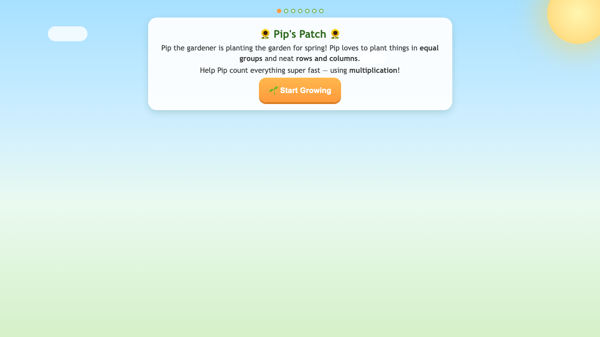


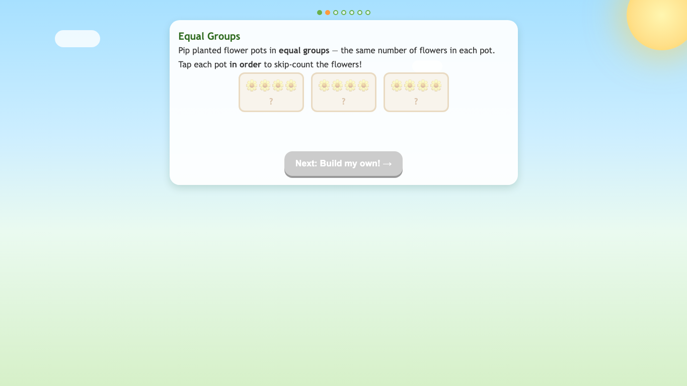


Evaluator judgment
{
"candidateId": "scenario-1-concept-only",
"verdict": "reject",
"scores": {
"designQuality": 2,
"originality": 2,
"craft": 2,
"functionality": 1,
"learningIntegration": 2,
"replayAppeal": 1
},
"evidence": [
"All five screenshots are pixel-identical: three flower pots each showing '?' with no numbers filled in, and the 'Next: Build my own!' button remains greyed out/disabled throughout every captured state — meaning the core tap-to-skip-count interaction never visibly progresses.",
"The exploration trace shows repeated timeouts on '+' step buttons, 'Check My Array', 'See it as an Array!', and 'Next: Array Challenge!' all failing with 'element is not visible' — indicating the later stages (array builder, array challenge) exist only as inert disabled/hidden DOM nodes that were never reachable from this screen, i.e. the promised progression (equal groups → array → challenge) is not actually wired to the visible flow."
],
"critique": "On its face this looks like the pleasant, calm Sunny aesthetic (soft gradients, sunflower icons, progress dots) but the actual interactive core fails the basic test: tapping the pots to skip-count never updates the '?' placeholders in any of the five captured states, and the 'Next' button sits disabled the entire time. The trace confirms this isn't just a screenshot timing artifact — attempts to interact with supposedly-present controls (increment buttons, check-array button, array transition button) all throw 'element not visible' errors, meaning those pieces of the promised experience (build your own array, check my array, array challenge) are either not rendered on this screen or are broken/disconnected from the equal-groups step. This matches the 'harbor costume' failure pattern: a nice title card and decorative flower pots dressed around a mechanic that either doesn't register taps or was never given working state transitions for this trace. Nothing here demonstrates that skip-counting taps actually produce counted values, that array visualization appears, or that the challenge stage is reachable — the flowers are static decoration, not a functioning multiplication manipulative. There is no evidence of feedback, error-handling, or payoff; it's unclear if a child could ever pass this screen. This reads as an AI-generated shell with correct vocabulary in the instructional text ('equal groups', 'rows and columns', 'skip-count') but no functioning arithmetic engine behind the tap targets, at least in what was captured.",
"nextMove": "pivot"
}scenario-2-profile
Scenario 2 — concept plus factual child profile
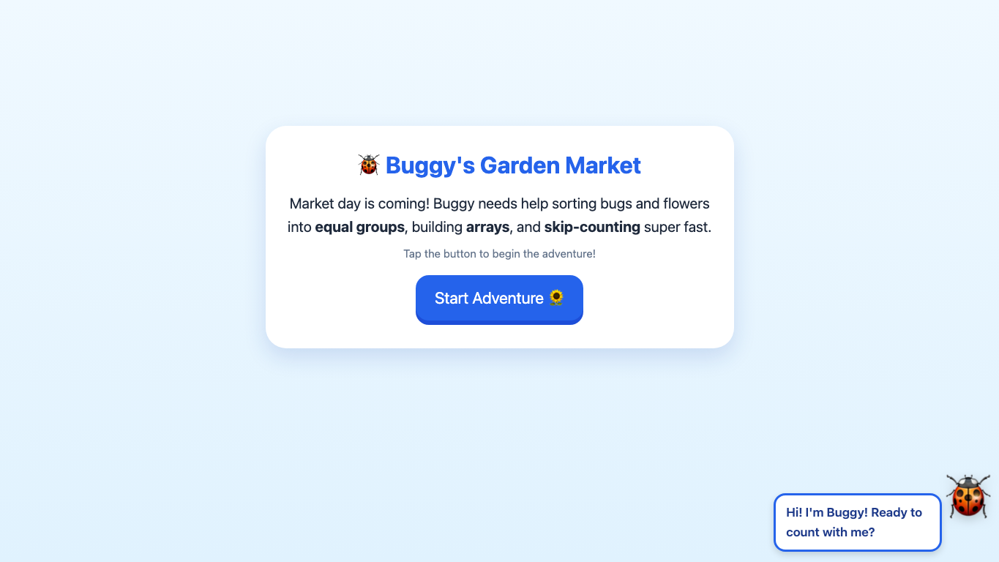
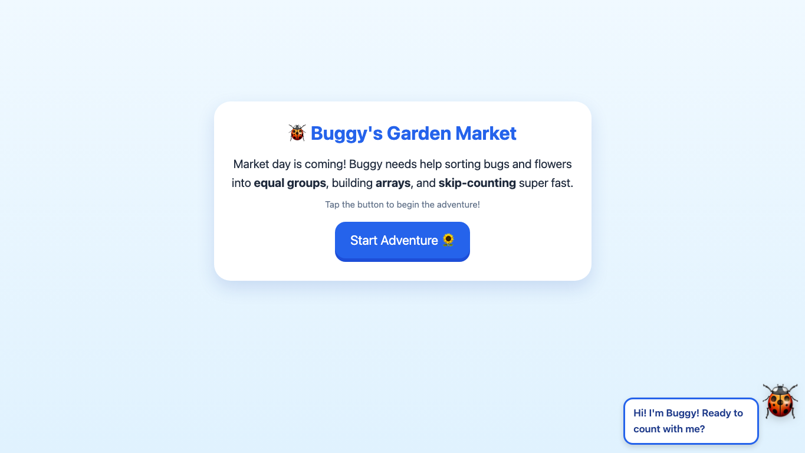
Evaluator judgment
{
"candidateId": "scenario-2-profile",
"verdict": "reject",
"scores": {
"designQuality": 2,
"originality": 1,
"craft": 2,
"functionality": 1,
"learningIntegration": 1,
"replayAppeal": 1
},
"evidence": [
"All three screenshots are identical to the intro screen ('Buggy's Garden Market') with the 'Start Adventure' button still present, even after the trace clicked it and waited 500ms.",
"Final visible text dump shows only the intro copy and Buggy's greeting bubble ('Hi! I'm Buggy! Ready to count with me?') — no activity, no bugs, flowers, arrays, or skip-counting task ever appears."
],
"critique": "There is nothing here to evaluate as a learning experience because the experience never starts. The trace explicitly clicks 'Start Adventure' and waits for a transition, yet the captured 'progress' screenshot is pixel-identical to the pre-click state — same headline, same paragraph, same button, same Buggy speech bubble. Either the button is non-functional, the app failed to route to the actual activity, or the capture never advanced. Whatever the cause, the only thing a child (or evaluator) can observe is a static promotional card promising 'equal groups,' 'arrays,' and 'skip-counting' — concepts that are named in body text but never made tangible. This is worse than the 'bland answer-button' failures noted in prior harbor/tidepool work, because those at least produced a playable quiz; here nothing loads at all. There's no way to assess whether groups are visually built, whether arrays are interactive grids, or whether skip-counting has any on-screen representation tied to bug/flower sorting. The ladybug mascot and sunflower emoji are the only signs of 'theme,' and they sit inert in the corner as decoration, not as participants in any mechanic. Given the calibration standard that even mediocre entries were graded on whether a promised mechanic became real during play, this submission fails at the more basic threshold of entering play at all. I can't credit narrative ambition or thematic naming when the deliverable is a splash screen that goes nowhere. This reads as an unfinished build or a broken interaction path being presented as a finished product, and it should not be scored as a completed learning activity until the actual game screen renders and demonstrates the equal-groups/array/skip-count mechanics in action.\"]",
"nextMove": "pivot"
}scenario-3-profile-and-spelling
Scenario 3 — profile plus factual spelling success
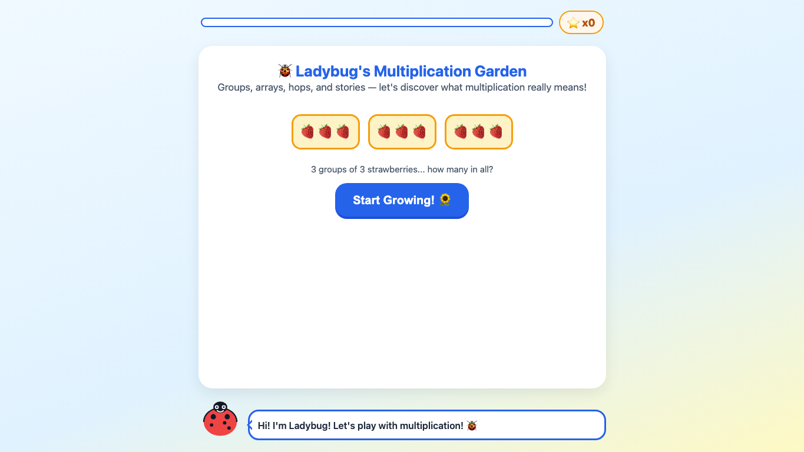

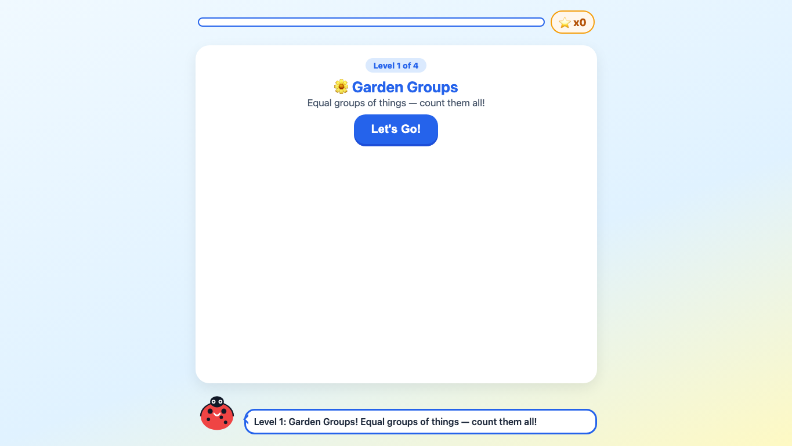


Evaluator judgment
{
"candidateId": "scenario-3-profile-and-spelling",
"verdict": "reject",
"scores": {
"designQuality": 2,
"originality": 1,
"craft": 1,
"functionality": 1,
"learningIntegration": 1,
"replayAppeal": 1
},
"evidence": [
"Clicking 'Let's Go!' (captured as 'first-action', 'progress', 'exploration' x2) produced zero screen change across all 5 screenshots — the same 'Level 1 of 4 / Garden Groups / Let's Go!' splash is shown every time, meaning the core interaction is completely broken or never implemented.",
"The intro screen's promise ('3 groups of 3 strawberries... how many in all?') is never followed up — the app never advances to show the actual multiplication question, array, or any interactive group-counting mechanic; the strawberry visuals from the title screen do not reappear or participate in the Level 1 content at all."
],
"critique": "This candidate cannot even be judged on math integration or mechanic quality because the app appears to be non-functional past the level splash screen: five consecutive captures (spanning a click, two waits, and a probing click at center-screen) show an identical static 'Let's Go!' card with no progression. There's no evidence any group/array/skip-count interaction ever renders — no equal-groups visual, no clickable strawberries, no counting interface, nothing for a child to actually do. The opening screen's strawberry-group visual is pleasant but purely decorative for the pitch, and the trace shows it doesn't return during actual play, echoing the 'world disappears during play' failure pattern seen in past rejected harbor/cargo quests. Right now this is not 'attractive artwork wrapping a quiz' — it's artwork wrapping nothing, since the click through to gameplay stalls entirely. There is no way to assess replay appeal, payoff, or math substance because the experience apparently dead-ends at the level intro. This is a functionality failure that overrides any surface polish; the button and level badge are the only 'craft' on display, and even that is inert.",
"nextMove": "pivot"
}scenario-4-evaluator-refactor
Scenario 4 — evaluator-guided pivot of scenario-1-concept-only
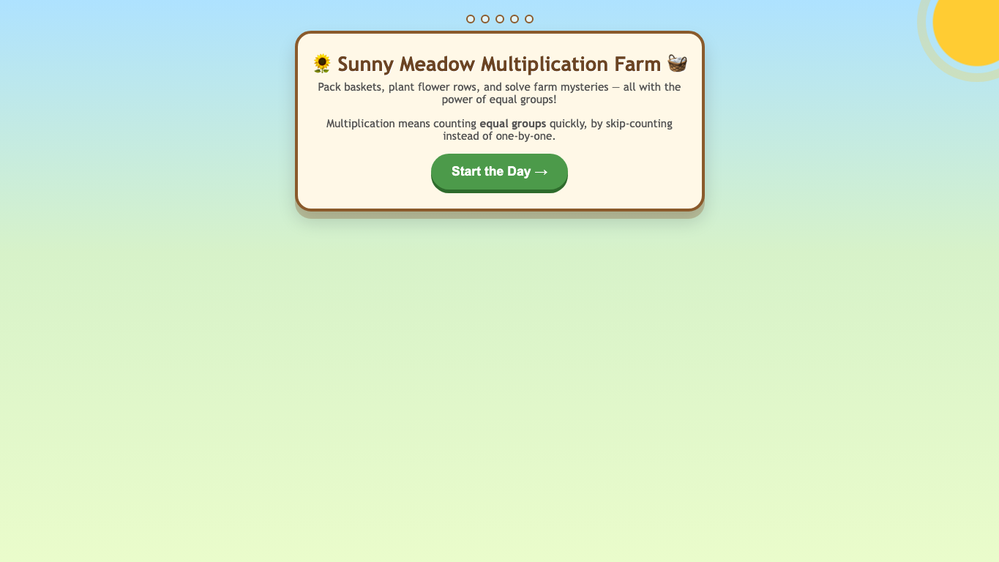

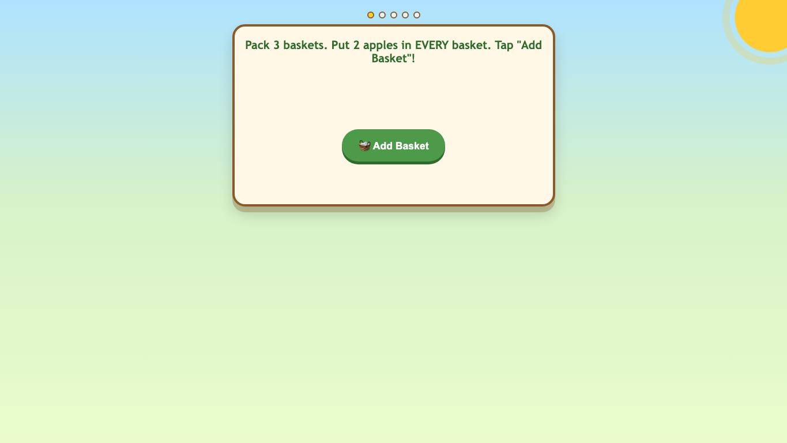


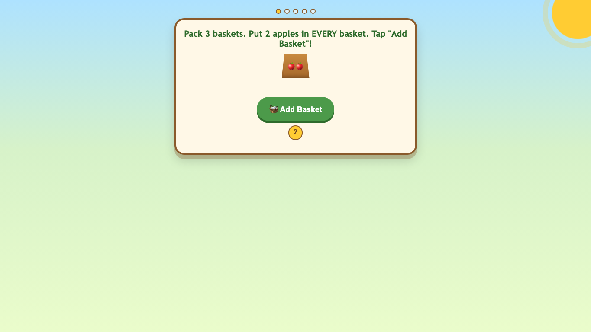

Evaluator judgment
{
"candidateId": "scenario-4-evaluator-refactor",
"verdict": "reject",
"scores": {
"designQuality": 2,
"functionality": 1,
"originality": 2,
"craft": 2,
"learningIntegration": 2,
"replayAppeal": 1
},
"evidence": [
"Screenshots show the activity stuck at the same 'Add Basket' screen from click 3 through the final captured frame - basket shows 2 apples with a '2' counter but never progresses beyond one basket despite the task requiring 3 baskets total.",
"Trace shows a cascade of failures after the first basket was added: attempts to click '✔' (submit), '⌫' (backspace), 'Continue to Flower Field →', 'Continue to Story Problems →', and 'Next Problem →' all timed out with 'element is not visible' errors, indicating the UI either never surfaced these controls or the flow broke entirely after the first interaction."
],
"critique": "This candidate cannot be judged as engaging or well-crafted because it appears to be broken past the very first interaction. The screenshots confirm the app is frozen on a single basket-packing screen (2 apples, counter reading '2') for every capture from 'exploration' onward, never advancing to the 2nd or 3rd basket, let alone the promised Flower Field or Story Problems stages. The trace's own error log shows five consecutive failed attempts to find visible submit, backspace, or continue buttons — strongly suggesting either a rendering bug, a modal that silently absorbed input, or a completion condition that never triggers. Even taking the most charitable reading (that the evaluator simply mis-clicked), the fact that no alternate path, error message, or visible feedback appeared in five sequential attempts means the experience fails the baseline functionality bar: a child would be stuck tapping a basket with no visible route forward. The premise (equal-groups repeated addition via basket-packing) is reasonable and on-concept, and the basket/apple visual is mildly more concrete than a bare answer-button, but nothing here can be credited as 'genuinely excellent' when the only verifiable evidence is a stalled first task. This reads as either an unfinished build or a state-machine bug that was never caught, not a deliberate design choice. There is no visible progression, no payoff, and no confirmation that skip-counting, arrays, or word-problem stages actually function — they exist only as button labels referenced in the trace, echoing the harbor-costume failure mode where promised mechanics are just words with no working interaction behind them.",
"nextMove": "pivot"
}